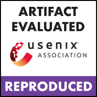
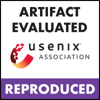

Primarily, my research uses techniques from Operating Systems, Networking, and
some Machine Learning to improve the performance and usability of Memory and Storage Systems.
Currently, I am focused on improving the data center scale storage systems through network/storage codesign.
You can find my full CV here.


 
